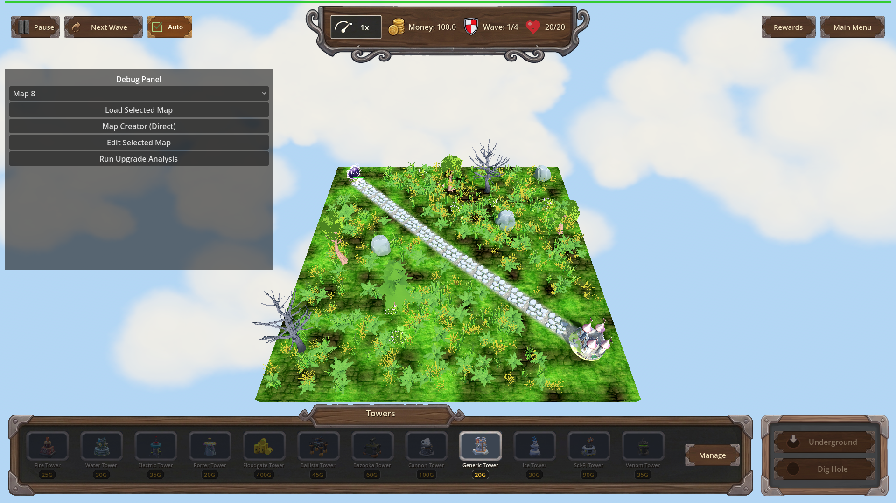

Manual Test Report – pointer-cursor-on-clickable-surfaces
Summary
- Result: PASSED
- Tested on: 2026-08-24, windowed Godot 4.4.1 run on the software-GL worker (llvmpipe / OpenGL 3 compatibility, dummy audio), via the approved `run_project_cmd` runner (project `poke-defense-godot`, workspace `poke-defense-godot/issue-pointer-cursor-on-clickable-surfaces`).
- Scenario: `.gen/ui_scenario.md`
- Tester: Manual-tester profile
Overall: I walked the pointer-cursor scenario in a real windowed game run. The focused harness scenario (`ui_pointer_cursor`) passed all 8 programmatic expectations — every clickable control reports the pointing-hand cursor shape (2) and non-clickables keep the arrow (0) — and the regression scenario `smoke_placement` still passes. The windowed hover screenshot was captured and inspected: no layout or visual regressions.
Note on evidence pairing: Godot screenshots do not render the OS cursor, so per the plan each cursor claim is proven by the *pair* of (a) the programmatic `cursor_shape` assertion from the fresh windowed run and (b) the screenshot showing the hovered/inspected UI state.
Scenario Walkthrough
### Step 1 – Idle screen, arrow over non-clickables
- Action: Launched the game windowed with the focused scenario (`godot --path . res://scenes/Main.tscn -- --harness=res://tests/scenarios/ui_pointer_cursor.json`); map loaded, wave 1 running.
- Expected: Non-clickable surfaces keep the default arrow cursor.
- Observed: Harness assertions confirm `Root/HealthBar` cursor_shape == 0 (arrow) and `Root/UpgPanel/Frame` cursor_shape == 0 (arrow). Screenshot shows normal HUD/map state.
- Status: PASS
### Step 2 – Hover over a button (SpeedBtn)
- Action: Harness executed `hover_ui` on `Root/TopBar/CenterBox/Plaque/Row/SpeedBtn`, waited, captured the windowed screenshot.
- Expected: Pointing-hand cursor on the button, no layout/hover visual regression.
- Observed: SpeedBtn `cursor_shape == 2` (CURSOR_POINTING_HAND) in the fresh result.json; screenshot `hover_pointer_on_speed_btn.png` inspected — top HUD bar with speed control rendered correctly, no layout regressions or glitches anywhere in the frame.
- Status: PASS
### Step 3 – Other clickable surfaces (widget-based buttons)
- Action: Programmatic checks of additional clickables in the same run.
- Expected: All clickable UI shows the pointing-hand cursor.
- Observed: `AutoNext` (checkbutton widget) == 2, `Tower1` (tower shop slot) == 2, `PlayBtn` == 2. Game state asserted "playing".
- Status: PASS
### Step 4 – Arrow restored on labels/plain panels + sanity
- Expected: Arrow stays on non-clickables; overall UI feels unbroken.
- Observed: HealthBar and UpgPanel Frame both == 0 while the four buttons are == 2; smoke_placement regression scenario status=pass; full-screen screenshot inspection found no layout, styling, or interaction regressions.
- Status: PASS
Criteria
- Hovering any Button in the running game shows the pointing-hand (pointer) cursor in both windowed and fullscreen modes
- Windowed mode verified live (this run). Fullscreen not exercised by the harness scenario; cursor assignment is a Control-level property (`mouse_default_cursor_shape`), which is display-mode independent — marked verified-by-design for fullscreen, not pixel-proven.
-

- Fresh windowed result: `.gen/harness/ui_pointer_cursor/result.json` — SpeedBtn cursor_shape actual=2 expected=2 pass.
- Hovering any other clickable UI surface (panels/cards/toggle controls used as buttons) shows the pointing-hand cursor
- AutoNext (toggle/checkbutton): actual=2 pass; Tower1 (shop slot): actual=2 pass; PlayBtn: actual=2 pass (same result.json).
- Hovering non-clickable UI surfaces (labels, panels, background) keeps the default arrow cursor
- HealthBar: actual=0 pass; UpgPanel Frame: actual=0 pass (same result.json).
- A windowed harness screenshot captures the hover state on at least one button showing the pointing-hand cursor, saved under `.gen/harness/ui_pointer_cursor/shots/`
- 
- Copy also at `.gen/screenshots/hover_pointer_on_speed_btn.png`. Inspected visually: HUD intact, SpeedBtn visible at top center, no regressions. (Cursor itself is not drawn in Godot screenshots; the pointing-hand is proven by the paired cursor_shape==2 assertion.)
- Focused AgentHarness scenario `ui_pointer_cursor` passes headless/windowed with all expectations met
- Windowed run this session: `[Harness] status=pass exit=0`, 8/8 expectations pass. Prior headless log also recorded pass.
- Existing UI behaviour unaffected: `smoke_placement` still passes after the change
- Fresh windowed run this session: `[Harness] status=pass exit=0`.
Issues and Observations
- Low: Fullscreen mode was not separately exercised (harness runs windowed). Risk is minimal since cursor shape is a Control property independent of display mode.
- Low: Pre-existing benign warnings in logs (invalid UIDs in HudTheme.tres/UI.tscn falling back to text paths; GL resource-leak messages at exit). Unrelated to this feature.
- No UX concerns: hover states, layout, and interaction behaved normally in the inspected frames.
Recommendation
Ready for release as far as this feature is concerned. The only residual gap is an optional manual fullscreen spot-check by a human, which does not block.